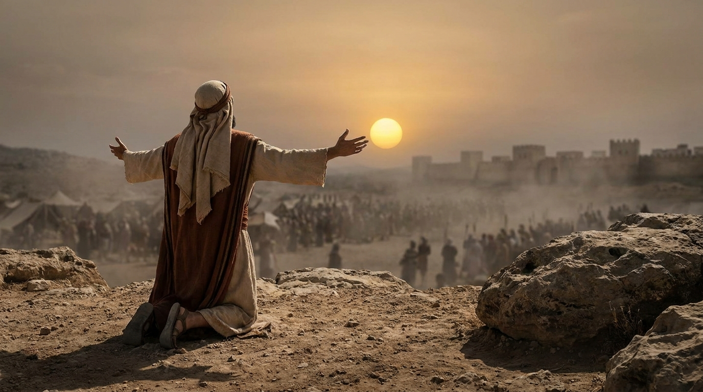

A Conquista da Terra
Josué narra a transição da liderança de Moisés para Josué e a entrada triunfal do povo de Israel na Terra Prometida. O livro destaca a fidelidade de Deus em cumprir Suas promessas, o poder da obediência e a importância de ser forte e corajoso.
Ficha Técnica
- Autor: Tradicionalmente atribuído a Josué
- Tema Principal: Fé, obediência e a conquista de Canaã
- Versículo-Chave: "Não fui eu que lhe ordenei? Seja forte e corajoso! Não se apavore, nem desanime, pois o Senhor, o seu Deus, estará com você por onde você andar." (Josué 1:9)
Estrutura
- A Entrada na Terra Prometida (Caps. 1-5)
- A Conquista das Cidades de Canaã (Caps. 6-12)
- A Divisão da Terra entre as tribos (Caps. 13-22)
- Despedida e Renovação da Aliança (Caps. 23-24)